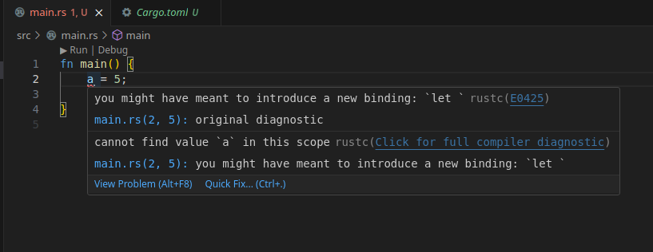

Entradas en programación
Error de autenticación en Antigravity y AmpCode en Windows
- 2026-02-21
Si has instalado Antigravity o AmpCode en Windows 11 y te ha resultado imposible iniciar sesión, no eres el único. Este problema de autenticación es más común de lo que parece y las soluciones habituales no siempre funcionan. Te cuento cómo lo solucioné.
Herramientas de IA gratuita para desarrolladores en 2026
- 2026-01-18
Estamos en 2026 y la inteligencia artificial ya no es una novedad, es el estándar. Sin embargo, el cuello de botella sigue siendo el mismo para muchos desarrolladores independientes y estudiantes: el costo de las suscripciones. Mantener acceso a los modelos de frontera puede representar fácilmente cientos de dólares al mes.
Conector MySQL para Python en Manjaro
- 2025-05-04
Ahora que uso
Manjaro en lugar de Ubuntu,
uno de los problemas que encontré para adecuar el entorno de desarrollo que uso
en mi trabajo, es que el conector de MySQL para Python MySQLDb depende de
libmysqlclient-dev, que no está disponible en Manjaro. Te cuento cómo
solucioné el problema.
Instalar Docker en Manjaro
- 2025-04-23
En el pasado publiqué un artículo de como instalar y usar Docker en Ubuntu con Snap y ahora que uso Manjaro vale la pena revisar los pasos para instalar Docker en Manjaro.
Aprendiendo Rust: Parte 1 - Uso básico de cargo, variables y flujos de control
- 2025-03-31
Hace casi dos años me propuse aprender Rust, pero no tuve tiempo o realmente tenía poca disciplina para seguir adelante. Ahora, estoy en firme con el propósito para este 2025 y aquí estoy tomando notas, haciendo algunos ejercicios e iniciando un proyecto. Respecto a estas notas, deben considerarse como notas personales, y bueno cubro detalles de lo básico para iniciar con un proyecto con cargo, imprimir en consola, asignar variables, tener claros los tipos de variables y hacer flujos de control (todavía sin manejo de errores).
Zed: un editor rápido y moderno de código abierto
- 2025-03-27
zed es un editor de código y texto de código abierto, diseñado para ser rápido y fácil de usar. Está construido en Rust y utiliza una interfaz de usuario moderna e intuitiva. De momento es soportado de forma oficial en Linux y macOS, pero se está trabajando en su implementación para Windows (aunque existen versiones experimentales). Te contaré cómo instalarlo y algunas de sus características.
Módulo pkg_resources no encontrado en ambientes UV
- 2025-01-26
A partir del 8 de febrero de 2026, setuptools v82 eliminó el módulo
pkg_resources. Si experimentas este error después de esa fecha, la causa
probable es la actualización de setuptools. La solución es fijar la versión
a la anterior, por ejemplo, setuptools<82.
Configuración de proyectos y herramientas Python con UV
- 2025-01-06
Crearemos un proyecto Python con uv, el cual usa el formato
pyproject.toml para su configuración, facilitando la portabilidad del
mismo. Adicional, este formato ya es un formato común con otros gestores de
paquetes de Python, y usado para la configuración de utilidades.
Unir video y audio con ffmpeg y bash
- 2024-10-20
Recién mi novia me pidió el favor de ayudarle a descargar los videos de un curso antes de que se venciera el acceso a la cuenta, y tocaba descargar los videos de Vimeo. Pero el truco de descarga de estos videos, hace que luego toque unir el audio y el video, así que les contaré como hacerlo con FFMPEG y Bash.
UV, alternativa rápida a PIP y VENV
- 2024-06-30
UV es un gestor de paquetes y entornos virtuales alternativo para Python,
desarrollado en Rust y que nos promete ser muy rápido en los procesos que
pretende reemplazar de PIP y VENV. En este sentido, solo es añadir uv antes de
las instrucciones habituales y debe funcionar (salvo algunos casos particulares
de compatibilidad o de no existir implementación).
Instalar Rust en Linux
- 2024-06-15
En mi proceso por aprender Rust, iré compartiendo algunos pasos con ustedes. En esta ocasión, como instalar Rust en Linux, y prepararnos para usarlo en VSCode y en Notebook.
